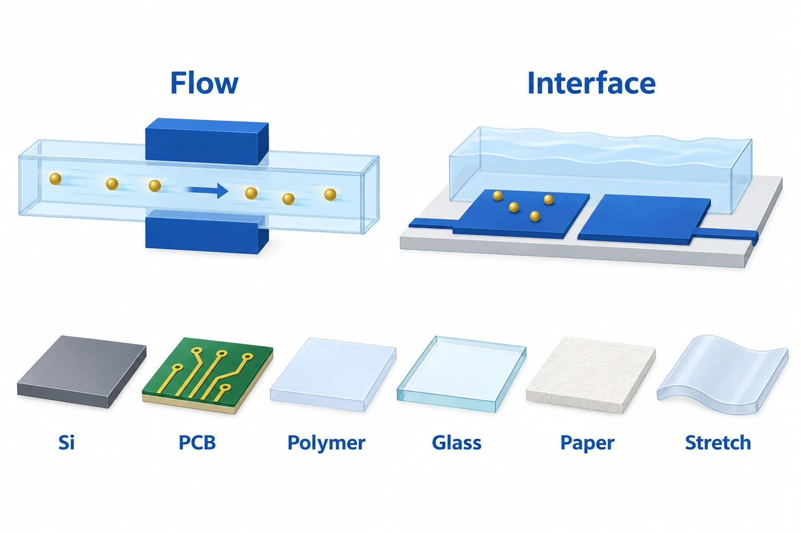

The question behind this study
This review examines microfluidic impedance biosensors through how samples encounter electrodes. It distinguishes measurements of flowing cells from signals at binding interfaces and compares the linked choices of substrate, electrode geometry and flow.
How samples meet electrodes
Microfluidic impedance signals depend on how samples meet electrodes. Sensing changes at a binding surface differs from sensing cells passing through a channel. This distinction helps explain the roles of substrates, fabrication, flow and electrode geometry.
Choosing substrates and fabrication methods
Silicon supports micromachined electrodes but has demanding processing requirements. Printed circuit boards (PCBs) have a mature fabrication base, while conventional linewidths and spacing limit miniaturization. Ease of fabrication and small electrode size can therefore conflict, and sensitivity also depends on surface functionalization and measurement conditions.

AI-generated concept distinguishing flowing-target and stationary-interface impedance sensing and the review’s substrate categories.
This is a simplification based on selected main text. Liquid, electrode and target arrangements do not reconstruct a measurement cell, dimensions, chemical binding, protocol, quantitative performance or clinical diagnosis.
This is not a reproduced paper figure and does not establish permission to reuse the original figure.
Flowing cells versus stationary samples
Flow focusing and electrode geometry affect where cells or particles pass through an electric field. Stationary samples instead depend on surface binding and interfacial measurement conditions. Their detection limits can concern different targets and measurement questions.
Paper substrates: cost and fabrication
The review highlights paper’s low material cost while identifying electrode patterning and surface binding as challenges. Substrate cost needs to be considered with fabrication and sample placement. Devices made from the same paper substrate can serve different uses through their electrodes and surface chemistry.
Conditions for comparing performance
Frequency, electrode spacing, flow and target size change how signals should be interpreted. Commercial prospects require device-specific testing with users and real samples. Numerical sensitivity or throughput comparisons need primary studies with these conditions matched.
Related studies
Micromachined impedance spectroscopy flow cytometer for cell analysis and particle sizing
Gawad’s abstract describes multifrequency impedance measurements of individual particles in glass–polyimide channels.
Individual-cell flow measurements and antigen-binding detection limits are different metrics.
Abstract-based introductionSources used in this summary
The source basis is Europe PMC §§2–8 on substrates, flow, electrodes, fabrication and conclusions, including §2/3 opening and closing passages, PCB linewidth and §6 paper-cost/electrode discussion. Supplementary information is outside its scope.